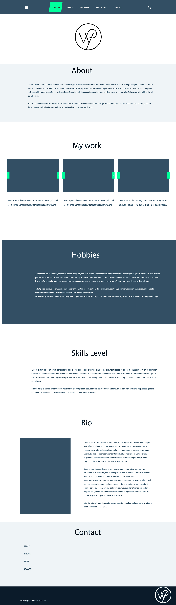
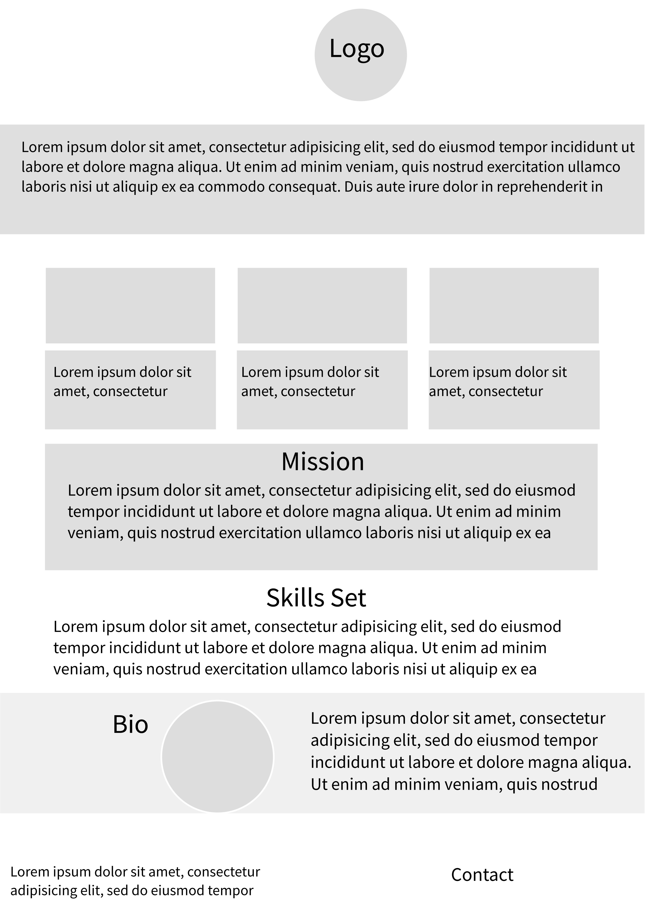

(1) What is the purpose/goal of the design
Introduce who I am as a designer. Promote myself as a businesses/artist, provide information, connect people, and store content.
(2) Who is the Audience?
Professional artists/designers.
(3) What message needs to be ccommunicated?
Showcases my work as a designer showing my capabilities and vision to hire me.
(4) What is the competition and marketplace?
Other graphic designers.
(5) What is the context?
Having an organized and eye-catching design portfolio can easily turn a chance meeting with a stranger into an interview for a potential client or employer. Introducing myself and getting a background on who I am. Also demo a graph showing my skill level in various design programs. Also, a works page featuring some of my previously done works in categories – logo designs, UX/UI, Photoshop, illustration.
(6) In what voice?
Simplistic professional style design. To give a sense of trustworthiness to a business, and good use of design principles like color, relative size, contrast, all help a site’s usability as well as its attractiveness.
(7) What kind of response is desired
Being efficient and personalized to the user. Build on the client needs even changing things if it makes more effective. Doesn't overly complicated, but still understands reasoning behind why each design choice was made.
(Large screen layout)
 